Building a Better World, Together
A systems engineering vision for coordinating knowledge, technology, and resources to meet human needs. Explore our ideas and join the conversation.
Terra Nova · A vision for 2031–2036
The Future Is Already Taking Shape
Imagine a world where abundant clean energy powers homes and industry, advanced knowledge is available to everyone, housing becomes more affordable to build, and healthcare focuses on preventing suffering. These possibilities grow from technologies already being developed today. The challenge is to organize them into systems that serve everyone.
We do not need to invent every piece of the future. We need to connect what humanity already knows.
Ten interconnected systems for a better world
01 · Abundant Energy
Solar, wind, storage, smarter grids, and complementary power sources could expand access to dependable, affordable clean energy.
02 · Abundant Housing
Modular construction, robotics, improved materials, and standardized designs could help build quality homes faster and at lower cost.
03 · Food and Clean Water
Precision agriculture, aquaponics, water recycling, and more efficient desalination could strengthen local food and water security.
04 · Universal Healthcare
AI-supported diagnostics, remote monitoring, prevention, and better care coordination could improve access—alongside essential financing reforms.
05 · Education for Everyone
AI tutors, open digital libraries, simulations, and connected classrooms could make personalized lifelong learning accessible worldwide.
06 · Intelligent Manufacturing
Robotics, automated production, and AI-assisted design could increase output, lower costs, and expand human capabilities.
07 · Modern Transportation
Electric mobility, safer automation, better public transit, and expanded rail could connect people and communities more efficiently.
08 · Stronger Communities
Coordinated housing, social services, community centers, and public spaces could reduce isolation, homelessness, and preventable hardship.
09 · Systems Engineering for Society
Digital twins, transparent measurement, and evidence-based planning could help communities identify needs and improve services.
10 · Human Well-Being
Productivity gains can become greater security, opportunity, health, and freedom when society deliberately designs systems around people.
Three phases of development
This five-to-ten-year outlook is a plausible development scenario, not a guaranteed prediction. Progress will depend on engineering, investment, policy, reliability, and public trust.
Abundance is already here in potential. Terra Nova Development exists to help turn that potential into reality.
There is no them. There is only us.
Terra Nova Development: Our Organizational Vision
Terra Nova Development (TND) is envisioned as the parent holding company and coordinating organization for a growing family of for-profit businesses and nonprofit public-benefit initiatives. Its purpose is to bring people, capital, technology, and practical systems engineering together to expand access to healthcare, education, housing, food, energy, and economic opportunity.
For-profit enterprises will pursue sustainable revenue, innovation, and investment. Separately organized nonprofit entities will pursue charitable, educational, and humanitarian missions under their own legal and governance obligations. Through appropriate partnerships, shared services, and mission-aligned support, these organizations can reinforce one another while respecting the legal independence and restrictions of nonprofit organizations.
TND aims to develop practical, scalable solutions that can begin in local communities and expand wherever they are needed. There is no them. There is only us.
This describes the intended organizational structure; it does not represent a claim that any particular entity has been legally incorporated or granted tax-exempt status.
Articles
The World Has Enough. We Just Need to Organize It.
Fighting poverty, hunger, homelessness, and crime through coordinated abundance.
Read full article →The Community Haven: A Federally Funded Blueprint for National Renewal
A nationwide network of welcoming neighborhood hubs for food, care, rest, recreation, and community.
Read full article →Abundance Is Already Here. The Missing Ingredient Is Access.
The world has extraordinary productive capacity. The challenge is making essential goods accessible to everyone.
Read full article →We Don’t Have to Take from the Rich to Lift Everyone Up
Restructuring our economy to make existing abundance accessible without confiscation.
Read full article →Making the Internet a Safer Place for Everyone
One button. One question. Can I Trust This? A proposal for free, evidence-based consumer protection.
Read full article →America’s Buildings Are Already Here. Let’s Turn Them Into Homes.
Reusing vacant offices, hotels, malls, and other buildings to expand affordable housing in American cities.
Read full article →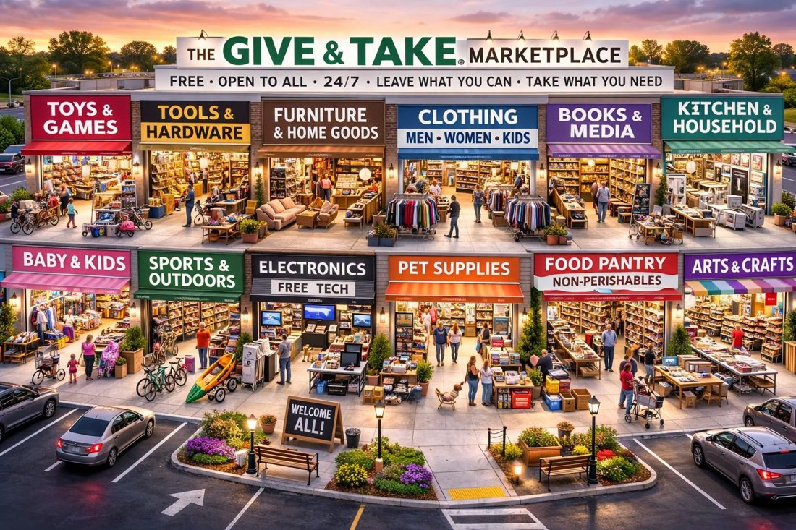
The Give & Take Marketplace
Imagine shopping malls where goods are freely shared and everyone can contribute.
Read full article →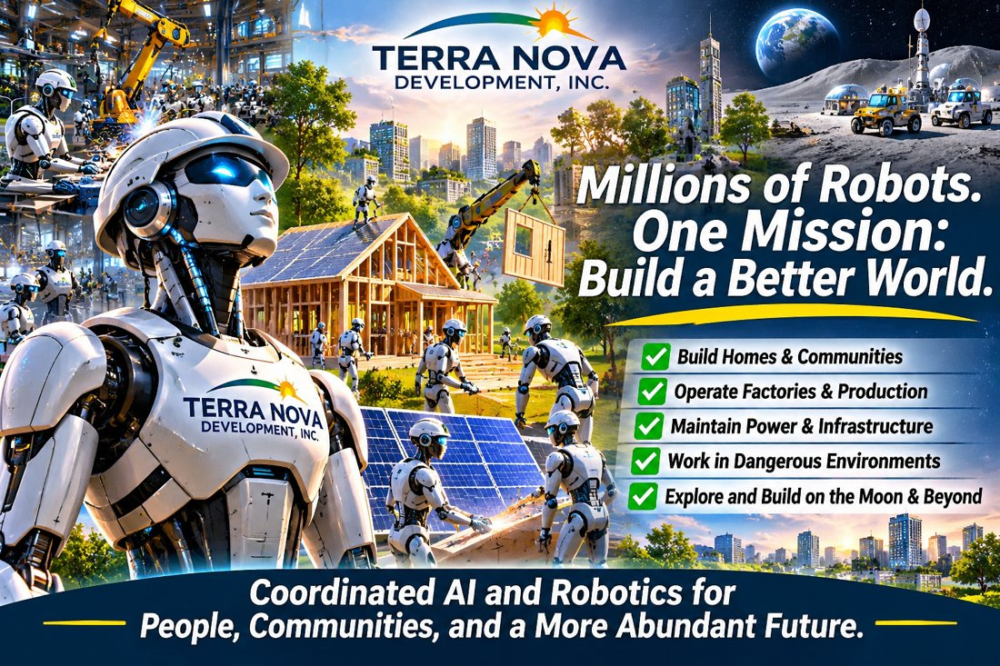
Millions of Robots. One Mission: Build a Better World.
How coordinated artificial intelligence and robotics could serve humanity.
Read full article →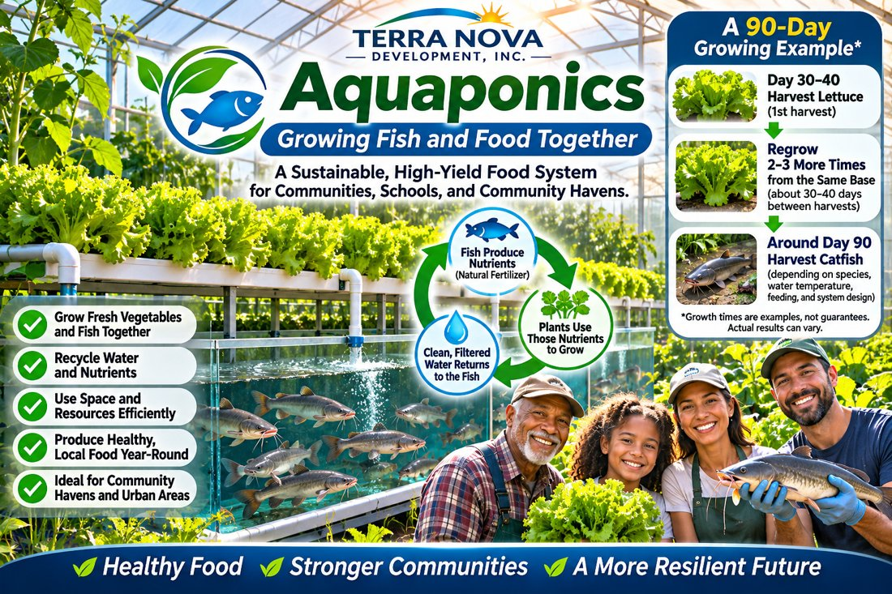
Aquaponics: Growing Fish and Food Together
A sustainable approach to growing vegetables and fish for local communities.
Read full article →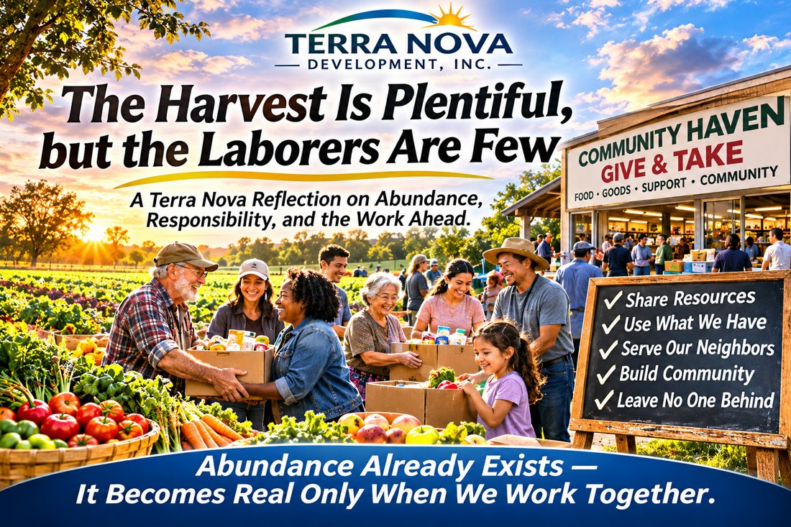
The Harvest Is Plentiful, but the Laborers Are Few
A Terra Nova reflection on abundance, responsibility, and the work ahead.
Read full article →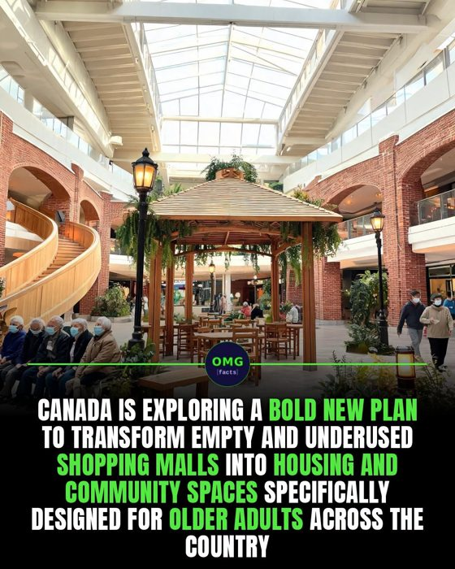
From Shopping Malls to Communities: A New Vision for Senior Living
Reimagining underused retail properties as accessible housing and connected communities.
Read full article →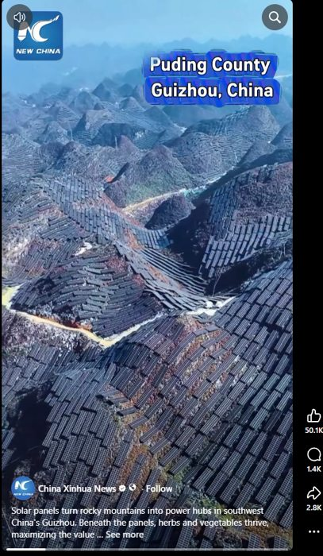
Turning Underused American Land into Clean Energy
What solar installations on rugged terrain in China can teach the United States.
Read full article →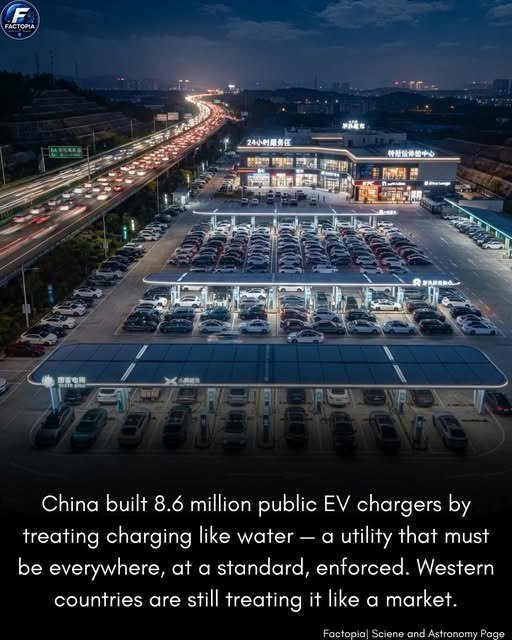
The Future of Electric Vehicles Depends on Charging Everywhere
Making charging as commonplace and dependable as gasoline stations.
Read full article →Robots on the Front Lines: Going Where Humans Cannot Safely Go
Using advanced robots to protect people in hazardous environments.
Read full article →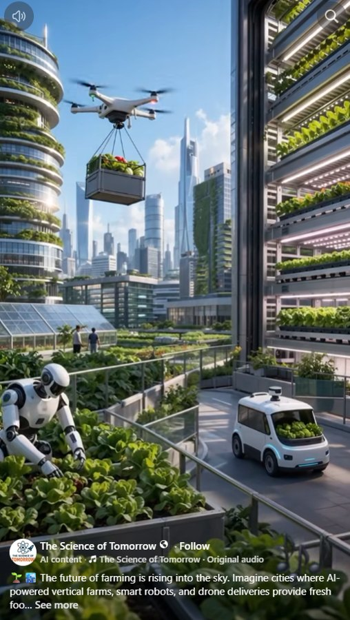
The Future of Urban Farming
Turning rooftops, vacant lots, and city streets into a living food system.
Read full article →Robots Building Homes for Everyone
How coordinated robotic construction could build safer, more affordable housing.
Read full article →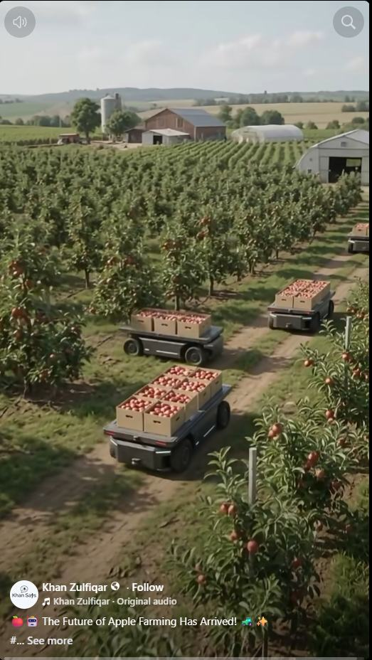
The Fully Automated Farm of the Future
Driverless tractors, specialized robots, and AI-coordinated farming — with a playable Facebook video preview.
Read full article →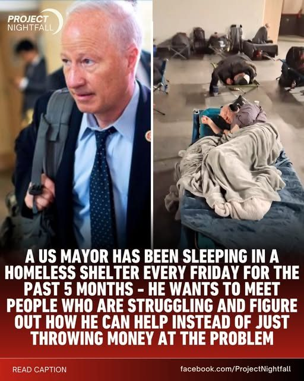
Leadership Begins by Listening: What a Mayor’s Shelter Visits Teach Us About Homelessness
Learning from residents to build better homelessness responses and Community Havens.
Read full article →A World Without Money: Returning to Humanity’s Natural State
Voluntary sharing and a gradual transition toward universal access.
Read full article →The Walmart of Tomorrow
A future of stores without price tags, supported by coordinated abundance.
Read full article →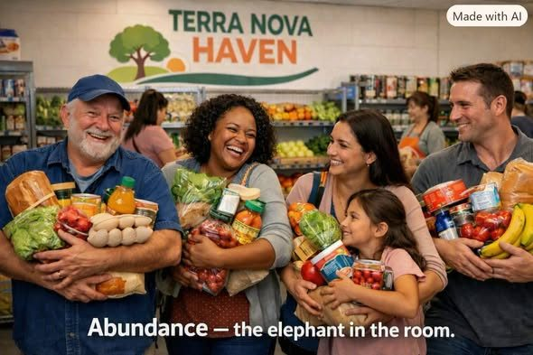
Unleashing Abundance: What If the Solution to Our Economic Problems Is Already Here?
What if voluntary sharing, Community Havens, and better coordination could unlock the abundance we already produce?
Read full article →Terra Nova Haven: Everything Is Free, Everyone Is Welcome
A welcoming community center for free goods, food, fellowship, rest, and connection.
Read full article →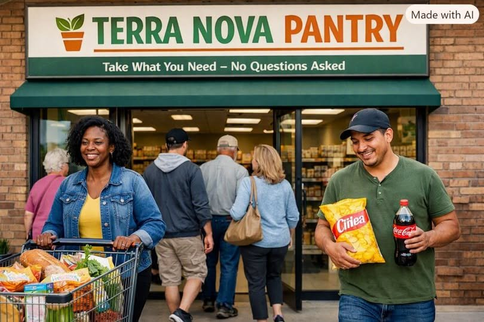
Terra Nova Pantry: A Plan to End Hunger in America and Around the World
A universal, no-questions-asked pantry that recovers safe surplus food and shares it freely.
Read full article →The National Staples Act: The Modern Cornucopia
Universal access to essential foods through grocery stores, with fair reimbursement to producers and retailers.
Read full article →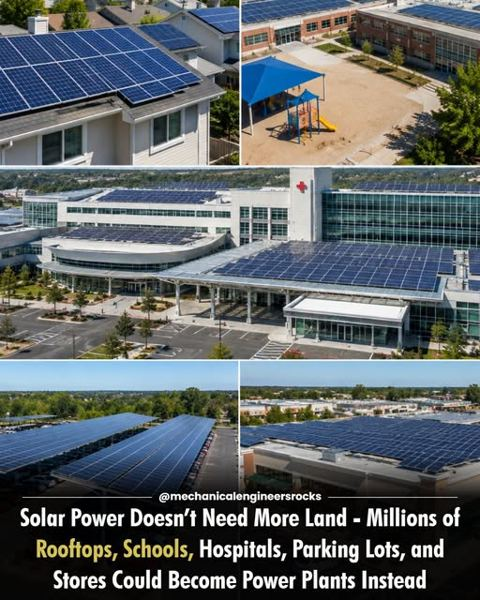
The Power Plants Above Our Heads: America’s Untapped Solar Revolution
Turning existing rooftops and parking areas into a nationwide network of clean electricity generation.
Read full article →Ice Master: A New Era in Autonomous Roadway De-Icing
A proposed autonomous thermal system for clearing dangerous winter roads.
Read full article →
The Future of Magnetic Levitation: A New Era of High-Speed Transportation
Exploring experimental maglev technology and its potential for American transportation.
Read full article →
Reimagining Prison Reform Through Healing, Rehabilitation, and Human Development
A justice system focused on rehabilitation, accountability, health, and successful reintegration.
Read full article →Medicare For All Americans: A Practical, Bipartisan, Pro-Business Solution
How universal healthcare could help workers, families, and American businesses.
Read full article →Beyond the Ballot: Building a Digital Democracy
A vision for continuous citizen feedback, public policy collaboration, and responsive representation.
Read full article →The Abundance Model of Child Care: A 24/7 Public System for Every Family
Universal, round-the-clock child care through participating public school districts.
Read full article →The World Beyond Money
A vision of human freedom, voluntary cooperation, and a gradual transition toward abundance.
Read full article →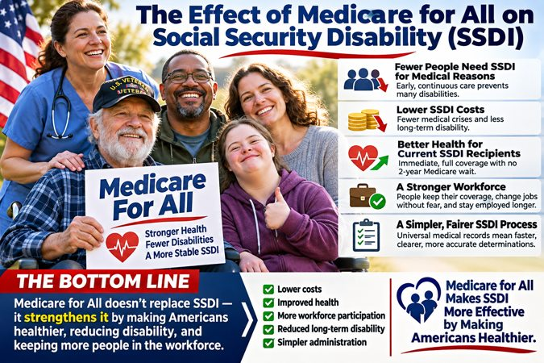
The Effect of Medicare for All on Social Security Disability (SSDI)
How universal healthcare could improve disability prevention, coverage, and support for SSDI recipients.
Read full article →The $70 MRI Question: What Medicare for All Could Change
Why medical imaging prices reveal larger opportunities for healthcare reform.
Read full article →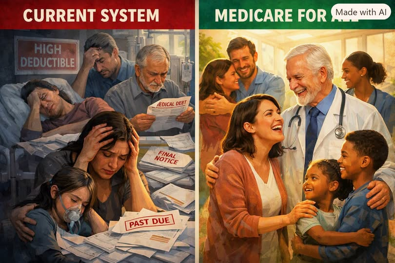
Medicare for All: The Efficient System America Has Been Avoiding
A systems-engineering case for reducing healthcare waste and strengthening businesses.
Read full article →The Myth That “The Wealthy Will Pay for Everything” — And Why It’s Wrong
How healthcare financing, a growing middle class, and tax policy interact.
Read full article →
Terra Nova Give & Take: The Engine of an Economic Revolution
A practical vision for free community exchange, reuse, and shared abundance.
Read full article →FeeFreeTickets.com — The Ticketing Rebellion
An advertising-supported model for face-value ticketing without added buyer fees.
Read full article →Why Healthcare Professionals Will Love Medicare for All
How a simpler healthcare financing system could give clinicians more time for patients.
Read full article →America’s Hidden Healthcare Costs — The Deflationary Dynamo
Exploring how Medicare for All could reduce waste and relieve costs across the economy.
Read full article →The Digital Commons: National Internet and Cellular Infrastructure
A public digital backbone with private service competition.
Read full article →The Great American Healthcare Hoax
A satirical critique of healthcare costs, insurance bureaucracy, and resistance to universal coverage.
Read full article →Ushering in a New Paradigm: Cooperation as the Key to Progress
How sharing knowledge and working together can accelerate human progress.
Read full article →Medicare for All and the End of the Group-Home Dilemma
A vision for independent living and reliable community-based disability supports.
Read full article →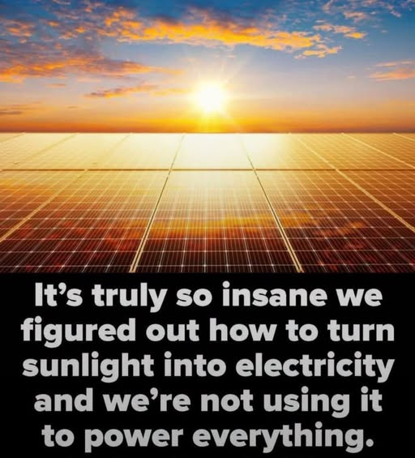
The Sun Is Already Powering Our World. Why Not More of It?
Harnessing solar power for abundant, affordable clean electricity.
Read full article →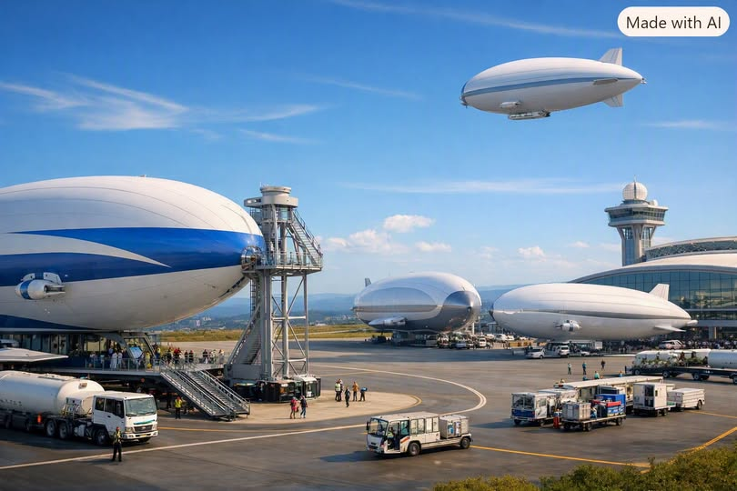
Blue Sky Airways: The Cruise Ships of Tomorrow
A concept for leisurely scenic journeys aboard spacious passenger airships.
Read full article →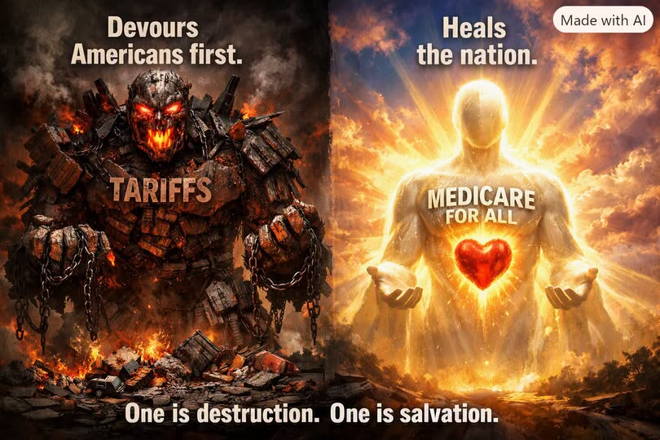
Tariffs vs. Medicare for All
Comparing external trade protections with internal healthcare reform.
Read full article →The Real People’s Movement
A call for shared purpose, forgiveness, abundance, and human unity.
Read full article →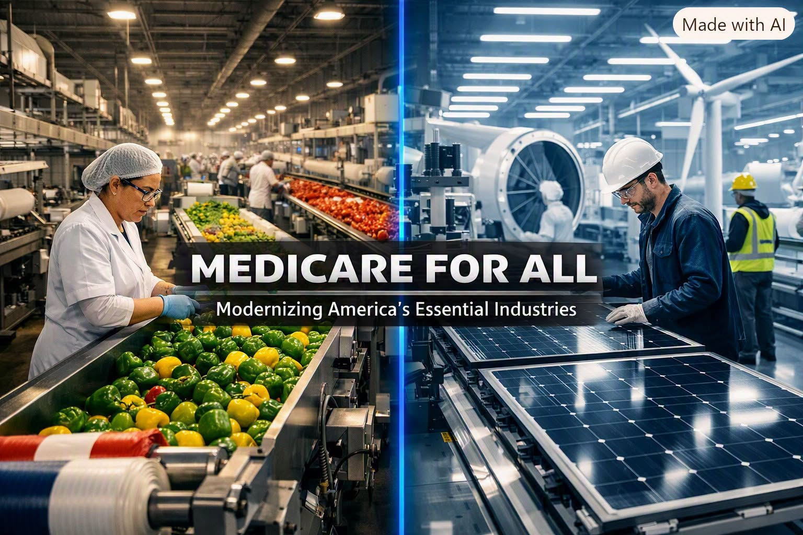
Medicare for All: The Most Powerful Competitiveness Strategy American Business Has Never Tried
How universal healthcare could reduce business costs and strengthen American industry.
Read full article →A New Foundation for Families: Free Child Care Through Public Schools
A proposal for free, locally administered child care from birth through age five.
Read full article →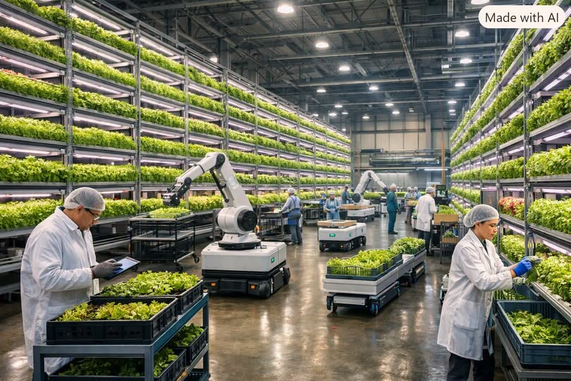
Growing Upward: Transforming Empty Towers and Obsolete Factories into Urban Vertical Farms
Reimagining vacant buildings as productive, year-round urban food infrastructure.
Read full article →Is America Already Socialist?
The 200-program question—and what it really reveals about America’s mixed economy.
Read full article →
The Necessary Illusion
Awakening through deception, healing through understanding, and evolving toward reconciliation, peace, and harmony.
Read full article →The Irresistible Message
A vision of abundance, cooperation, and liberation from fear.
Read full article →Terra Nova Manifesto: The Deflation Era Begins
How Medicare for All could reshape healthcare costs and the broader economy.
Read full article →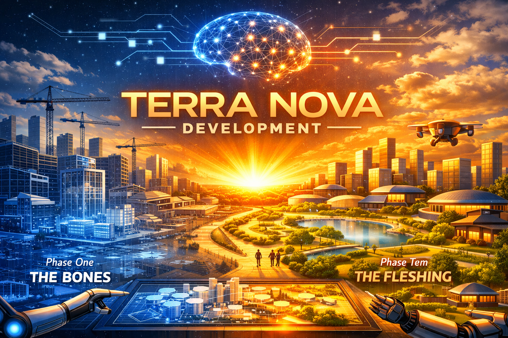
Redirecting Our Resources to Serve the People
A vision for redirecting our shared abundance toward health, education, dignity, and human flourishing.
Read full article →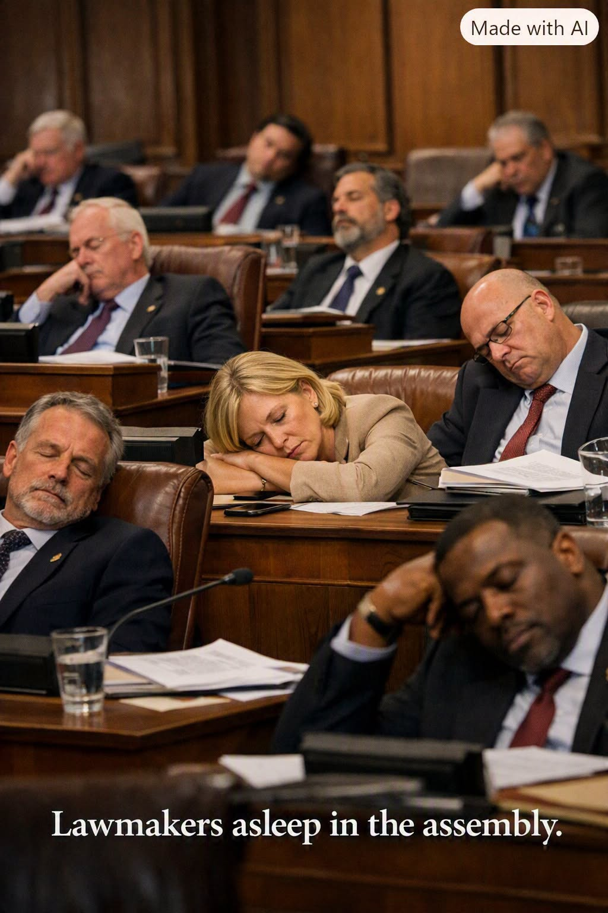
Medicare for All: Where the Legislation Stands
A look at the Medicare for All bills in Congress, their status, and the steps still required for enactment.
Read full article →Medicare for All and the Future of Home Care
How universal coverage could expand home-based services and support independence.
Read full article →What Medicare for All Would Mean for Veterans Needing Care of All Kinds
A look at healthcare access, long-term care, and support for veterans and their families.
Read full article →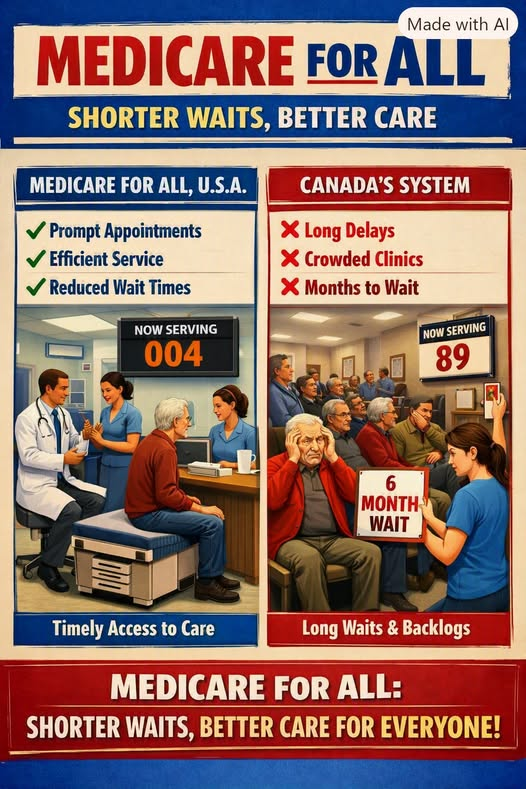
Why Medicare for All in the United States Could Outperform Canada’s System
How American healthcare capacity and smart policy could support universal coverage.
Read full article →
Medicare for All and the End of Medical Debt: A Retroactive Repair of a Broken System
A practical proposal to relieve medical debt through government-funded, interest-free payments.
Read full article →Why the Richest Corporate CEOs Could Ultimately Support Medicare for All
Why universal healthcare could benefit employers, workers, and the broader economy.
Read full article →The End of Money: Humanity’s Leap Beyond Scarcity
Exploring a future where abundance, technology, and cooperation meet human needs.
Read full article →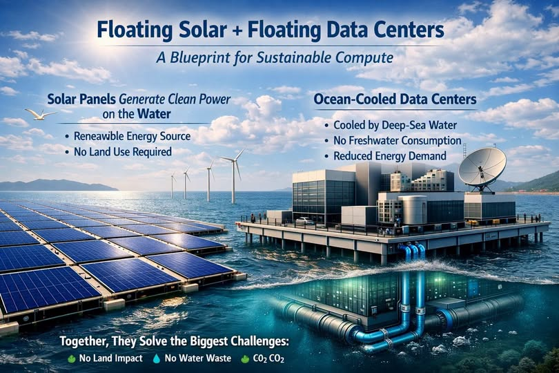
Solar Panel Efficiency: The Science Behind Solar Power—and Its Potential for Floating Infrastructure
How modern solar panels work and why floating solar and water-cooled data centers deserve attention.
Read full article →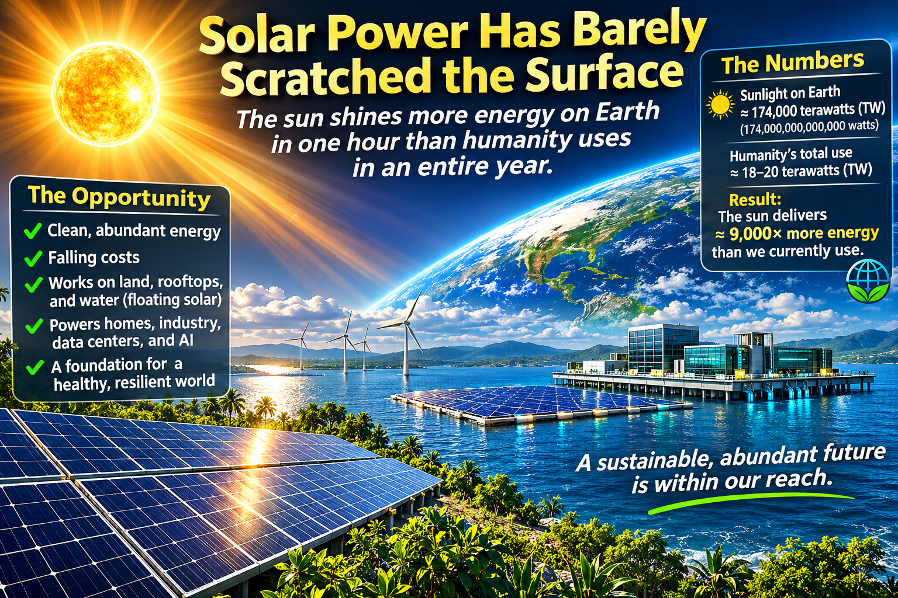
Solar Power Has Barely Scratched the Surface
The extraordinary abundance of sunlight and the engineering needed to harness its potential.
Read full article →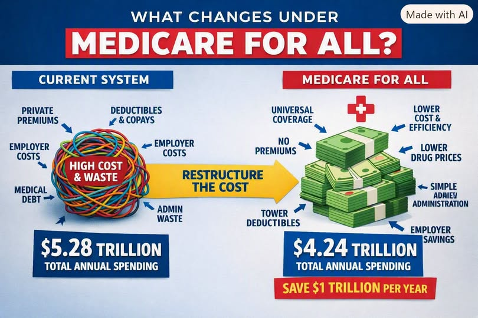
Who Pays for Medicare for All?
How single-payer healthcare could restructure financing and reduce overall costs.
Read full article →Medicare For All: A Practical Solution, Not a Political Battle
A practical case for Medicare for All examining healthcare costs, employer burdens, and economic impacts.
Read full article →Medicare For All and the End of Medical Debt: A Retroactive Repair of a Broken System
A proposal to eliminate existing medical debt and prevent future medical debt through Medicare for All.
Read full article →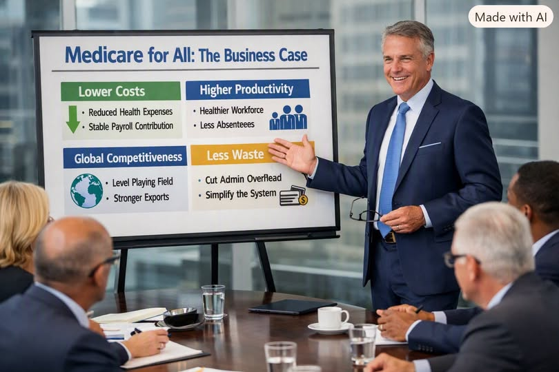
Why the Richest Corporate CEOs Will Ultimately Support Medicare for All
The business case for universal healthcare, from employer costs to productivity and competitiveness.
Read full article →
The End of Money: Humanity’s Leap Beyond Scarcity
A vision of automation, shared abundance, and a future beyond money and artificial scarcity.
Read full article →Terra Nova University: Lifelong Learning for Everyone, Anywhere
A vision for tuition-free global learning, AI-supported knowledge, and lifelong educational opportunity.
Read full article →
Solar Panel Efficiency
How modern solar modules are rated and why real-world output differs from laboratory efficiency.
Read full article →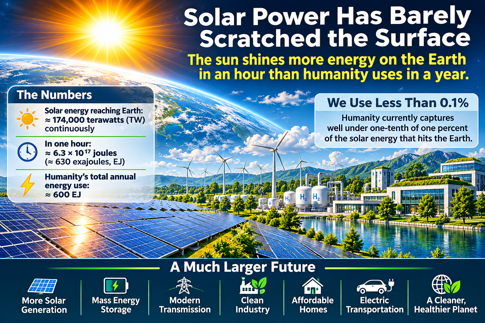
Solar Power Has Barely Scratched the Surface
The vast potential of solar energy and the technologies needed to harness more of it.
Read full article →
Who Pays for Medicare for All?
How single-payer healthcare could restructure premiums, taxes, and total healthcare spending.
Read full article →Free Education in the USA and Universal Debt Relief
A blueprint for tuition-free education and relief from existing student debt.
Read full article →Medical Debt Relief Plan
A proposal for government assumption and repayment of qualifying medical debt.
Read full article →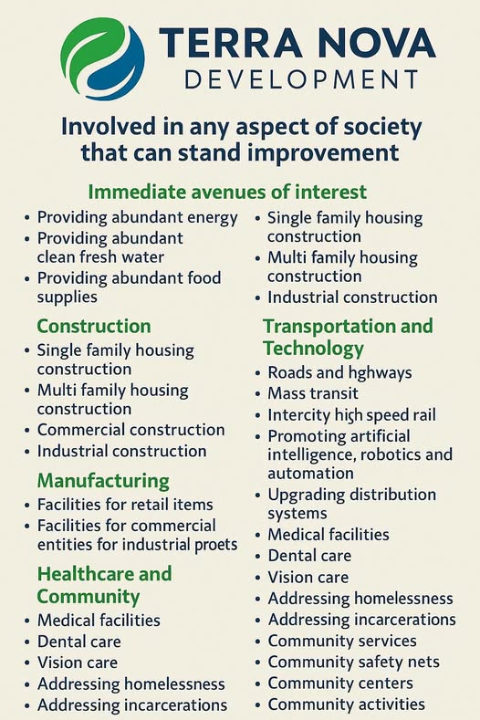
The Vision of Terra Nova Development
An organization dedicated to solving problems across society, whatever their nature.
Read full article →The Myth of Class Warfare — Why Business Is Quietly Moving Toward Medicare for All
An argument for the potential business benefits of universal healthcare financing.
Read full article →What Happens to the Part B Premium Under Medicare for All?
How a proposed Medicare for All system would eliminate Part B premiums and replace separate Medicare parts with unified coverage.
Read full article →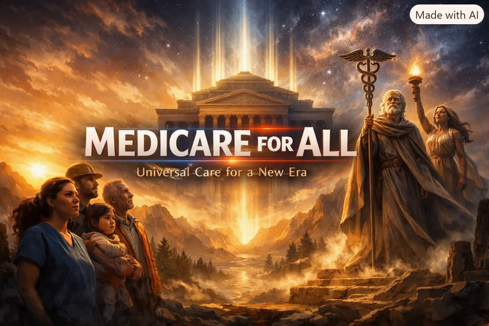
Direct and Indirect Costs of the Current System vs. Medicare for All
A comparison of healthcare spending, administrative costs, workplace productivity, and projected single-payer savings.
Read full article →The Negative Aspects of the Current U.S. Healthcare System
Fourteen challenges involving medical debt, insurance gaps, drug prices, administrative complexity, and access to care.
Read full article →Medicare for All: A Business Case for Universal Health Care
An economic argument for universal healthcare, focusing on employers, competitiveness, and administrative efficiency.
Read full article →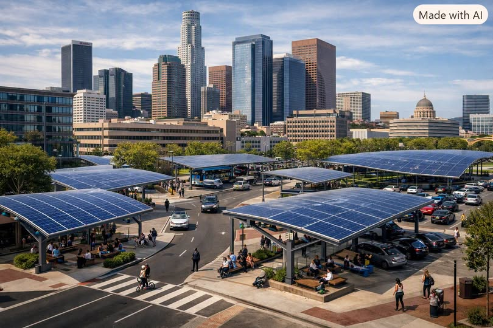
A National Energy Mission: Solar + New Battery Technologies
A vision for solar power and emerging storage technologies across existing American infrastructure.
Read full article →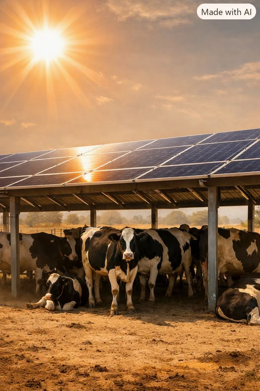
Solar Cowsheds — Complete Product Description
Modular solar livestock shelters designed to provide shade, generate electricity, and support rural farms.
Read full article →The Real Cost of Healthcare: Why Medicare for All Is Cheaper for Everyone
A comparison of premiums, employer costs, hidden burdens, and potential savings from Medicare for All.
Read full article →The True Cost of American Healthcare: Counting What the Bills Leave Out
Counting direct and indirect healthcare costs while accounting for expanded care under Medicare for All.
Read full article →The Reality of Employer-Provided Health Care
How employer and worker insurance costs compare with a proposed universal financing system.
Read full article →Walmart: What Employer-Provided Healthcare Really Costs
A look at Walmart’s employer and employee healthcare expenses and the case for more efficient financing.
Read full article →Treasury Bank: A Unified Digital Credit Institution for a Nation in Good Standing
A proposed public digital bank offering universal accounts, instant payments, and zero-interest credit.
Read full article →IceMaster Buffalo: A Pilot Program for a Northern City on the Edge of Innovation
A proposed autonomous winter road-treatment pilot for Buffalo using thermal melting technology.
Read full article →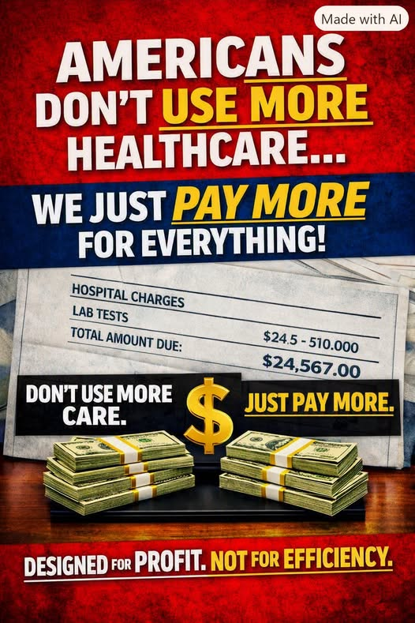
Americans Don’t Use More Healthcare. We Just Pay More for Everything.
Why U.S. healthcare costs are driven by prices and system complexity rather than simply higher use.
Read full article →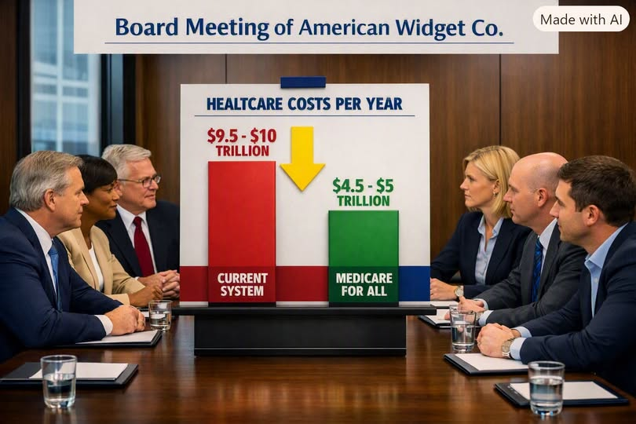
Reducing Costs — Booming Business
How lower healthcare costs could improve productivity, investment, and business competitiveness.
Read full article →The Real Cost of America’s Healthcare System: Direct Spending and Hidden Economic Burdens
Accounting for medical spending and economic costs without double counting.
Read full article →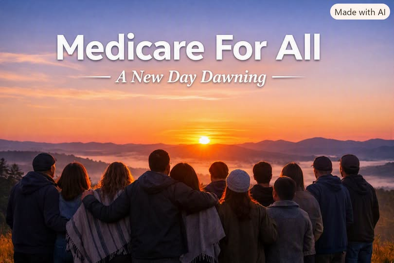
The Full Case for Medicare for All: A Structural, Economic, and Moral Transformation
A case for universal coverage, simpler administration, and broader economic benefits.
Read full article →Medicare for All — The Hidden Consensus
Why understanding universal healthcare could change public opinion.
Read full article →The Great Contrast: Medicare for All Compared to Our Current System
Comparing the complexity of American healthcare with a proposed unified system.
Read full article →About the Author
Willis Butts is a retired systems engineer and the founder of the Terra Nova Development vision, applying systems thinking to interconnected challenges in education, healthcare, housing, and community development.
Revision History
November 13, 2026: Indexed Articles #094–#096: The Full Case for Medicare for All; The Hidden Consensus; and The Great Contrast.
November 13, 2026: Indexed Articles #091–#093: Americans Pay More for Healthcare; Reducing Costs — Booming Business; and The Real Cost of America’s Healthcare System.
November 13, 2026: Added homepage panels for Articles #088–#090 in numerical order: Walmart Healthcare Costs; Treasury Bank; and IceMaster Buffalo.
November 13, 2026: Added homepage panels for Articles #085–#087 in numerical order: Real Cost of Healthcare; True Cost of American Healthcare; and Employer-Provided Health Care.
November 13, 2026: Added homepage panels for Articles #082–#084 in numerical order: Medicare for All Business Case; National Energy Mission; and Solar Cowsheds.
November 13, 2026: Added Articles #079–#081 to the homepage in numerical order: Part B Premium Under Medicare for All; Direct and Indirect Healthcare Costs; and Negative Aspects of the Current U.S. Healthcare System.
November 13, 2026: Added the missing Article #067 homepage panel, “Medicare For All: A Practical Solution, Not a Political Battle,” in numerical order between Articles #066 and #068.
November 13, 2026: Published homepage panels for Articles #072–#078, in ascending order after Article #071, including Solar Panel Efficiency, Solar Power, Medicare for All, Free Education, Medical Debt Relief, Terra Nova Vision, and the business case for Medicare for All.
November 13, 2026: Added homepage panels for Articles #068 (Medical Debt), #069 (Corporate CEOs and Medicare for All), and #070 (The End of Money), positioned in numerical order immediately before Article #071 (Terra Nova University).
November 13, 2026: Published Article #071, Terra Nova University: Lifelong Learning for Everyone, Anywhere, with its original splash image and downloadable Word document. Articles #067–#069 remain pending.
November 11, 2026: Expanded the homepage with Terra Nova’s 2031–2036 holistic technology vision, ten interconnected systems, and three development phases: The Bones, The Fleshing, and The Living System.
November 11, 2026: Published Articles #064–#066 on solar panel efficiency, the enormous potential of solar energy, and how Medicare for All could restructure healthcare financing; includes original illustrations and Word downloads.
November 11, 2026: Published Articles #061–#063 on medical debt relief, the corporate business case for Medicare for All, and a future beyond money, with original illustrations and downloadable Word documents.
November 11, 2026: Published Articles #058–#060 on home care, veterans’ healthcare, and comparing Medicare for All with Canada’s system; includes original illustrations and Word downloads.
November 11, 2026: Published Article #057, Medicare for All: Where the Legislation Stands, with original illustration and downloadable Word document.
November 11, 2026: Published Articles #054, The Irresistible Message, and #055, Terra Nova Manifesto: The Deflation Era Begins.
November 11, 2026: Published Article #056, Redirecting Our Resources to Serve the People.
November 11, 2026: Published Article #053, The Necessary Illusion, on awakening, truth, compassion, and reconciliation.
November 11, 2026: Published Article #052, Is America Already Socialist?, examining the public-service landscape and America’s mixed economy.
November 11, 2026: Added Terra Nova Development’s proposed parent holding company mission and clarified the roles of for-profit enterprises and independently governed nonprofit affiliates.
November 10, 2026: Initial website release featuring Article #001.
November 10, 2026: Added Article #002, The Community Haven, with concept illustration and linked thumbnail.
Version 003 · November 10, 2026: Added Article #003 with the Walmart illustration and linked homepage thumbnail.
Version 004 · November 10, 2026: Added Article #004 and Facebook sharing preview metadata to the homepage and all articles.
Version 005 · November 10, 2026: Added Article #005, Internet Trust Check, with dedicated image and Facebook preview metadata.
Version 006 · November 10, 2026: Added Article #006 on adaptive reuse of vacant buildings for affordable housing, with a featured image and Facebook sharing metadata.
Version 009 · November 10, 2026: Added Articles #007–#010, including the Give & Take Marketplace, coordinated AI robotics, aquaponics, and The Harvest Is Plentiful; added illustrated previews and sharing metadata.
Version 010 · November 2026: Added Article #011 on mall-to-community redevelopment and Article #012 on solar energy on suitable underused American land; both include downloadable companion DOCX files and social preview metadata.
Version 013 · November 2026: Added Articles #013–#015 on EV charging infrastructure, robots in hazardous environments, and urban farming, including illustrated pages, downloadable DOCX documents, and social sharing metadata.
Version 014 · November 2026: Added Articles #016 and #017 on robotic home construction and fully automated farming, with downloadable DOCX files, Facebook-ready preview images, and the original farm video link.
Version 015 · November 2026: Updated Article #017 with an orchard-video preview, click-to-play Facebook embed, and direct viewing fallback.
Version 017 · November 2026: Added Article #018 on leadership, listening, homelessness, and Community Havens, with an illustrated DOCX and social sharing preview.
Version 018 · November 2026: Added Article #019, A World Without Money, and Article #020, The Walmart of Tomorrow, with featured images and social sharing previews.
Version 019 · November 2026: Added Article #021, Unleashing Abundance, with four illustrations and a downloadable Word document.
Version 020 · November 2026: Added Article #023, Terra Nova Pantry: A Plan to End Hunger in America and Around the World, with concept illustration and full article.
Version 021 · November 2026: Added Article #024, The National Staples Act: The Modern Cornucopia, with the cornucopia illustration and universal food-access proposal.
Version 022 · November 2026: Added Article #025, The Power Plants Above Our Heads, with the supplied solar image and downloadable Word document.
Version 023 · November 2026: Added Articles #026–#028 on Ice Master autonomous de-icing, maglev transportation, and rehabilitation-centered prison reform, with original illustrations and downloadable DOCX files.
Version 024 · November 2026: Added Articles #029 and #030 on Medicare For All as a bipartisan, pro-business solution and digital democracy, with supplied illustrations and downloadable Word documents.
Version 025 · November 2026: Added Articles #031–#033 on universal child care, a world beyond money, and Medicare for All’s potential effects on SSDI, with images and downloadable Word documents.
Version 026 · November 11, 2026: Added Articles #034–#036 on MRI pricing, Medicare for All efficiency, and healthcare financing and the middle class, with featured images and downloadable Word articles.
Version 027 · November 11, 2026: Added Articles #037–#040 on Terra Nova Give & Take, FeeFreeTickets.com, healthcare professionals and Medicare for All, and hidden healthcare costs, with illustrations and downloadable Word documents.
Version 028 · November 11, 2026: Added Article #042, The Great American Healthcare Hoax, with illustration and downloadable Word article.
Version 029 · November 11, 2026: Added Articles #043–#048 on cooperation, independent living, solar abundance, Blue Sky Airways, tariffs versus Medicare for All, and the Real People’s Movement, with illustrations and downloadable Word documents.
Version 030 · November 11, 2026: Added Articles #049–#051 on Medicare for All and American industry, free child care through public schools, and converting vacant buildings into vertical farms; includes illustrations and downloadable Word articles.
Support the Vision
Interested in helping Terra Nova Development? Reach out through your existing community channels. Buy Me a Coffee — Support Terra Nova Development.